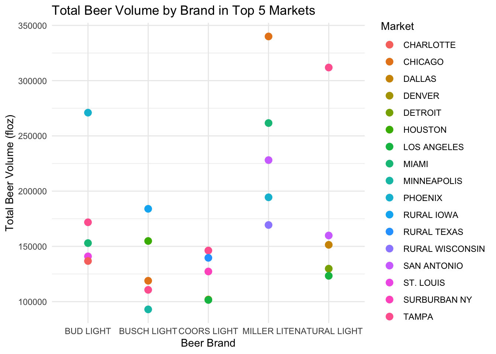
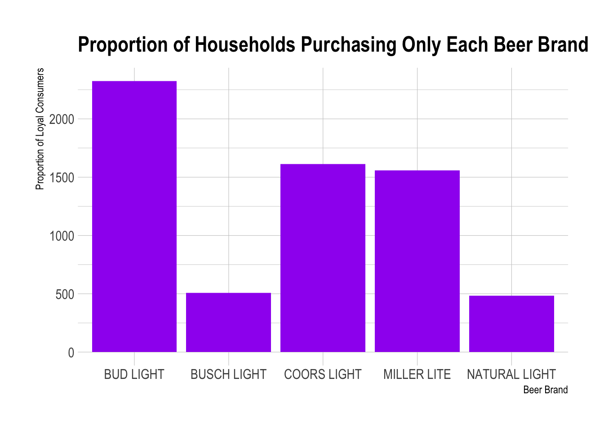
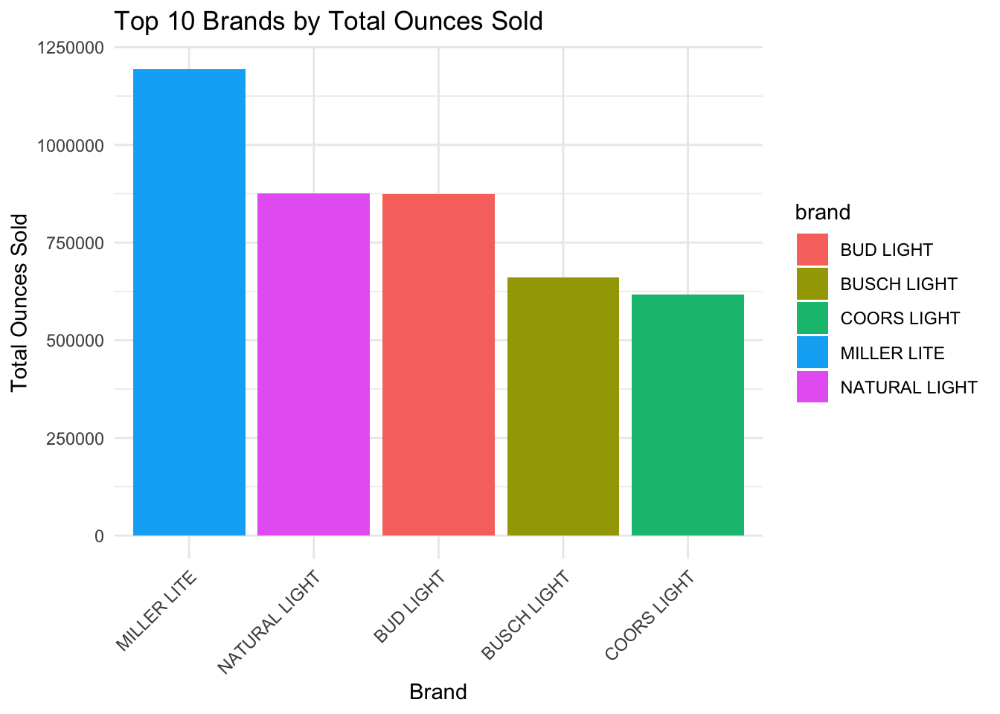

library(tidyverse)
library(skimr)
beer_mkts <- read_csv('https://bcdanl.github.io/data/beer_markets.csv')top_markets <- beer_mkts %>%
group_by(brand, market) %>%
summarize(total_floz = sum(beer_floz)) %>%
arrange(brand, desc(total_floz)) %>%
group_by(brand) %>%
slice(1:5)
top_markets# A tibble: 25 × 3
# Groups: brand [5]
brand market total_floz
<chr> <chr> <dbl>
1 BUD LIGHT PHOENIX 271012
2 BUD LIGHT TAMPA 171830
3 BUD LIGHT MIAMI 152990
4 BUD LIGHT ST. LOUIS 140982
5 BUD LIGHT CHARLOTTE 136786
6 BUSCH LIGHT RURAL IOWA 184000
7 BUSCH LIGHT HOUSTON 154896
8 BUSCH LIGHT CHICAGO 118916
9 BUSCH LIGHT TAMPA 110680
10 BUSCH LIGHT MINNEAPOLIS 92992
# ℹ 15 more rows# This code finds the top 5 markets in terms of total beer_floz for each beer brandloyal_consumers <- beer_mkts %>%
group_by(hh, brand) %>%
summarize(purchased = n()) %>%
group_by(brand) %>%
mutate(total_hh = n(),
fraction = sum(purchased == 1) / total_hh) %>%
arrange(desc(fraction))
loyal_consumers# A tibble: 13,202 × 5
# Groups: brand [5]
hh brand purchased total_hh fraction
<dbl> <chr> <int> <int> <dbl>
1 2000417 COORS LIGHT 8 3045 0.529
2 2000711 COORS LIGHT 13 3045 0.529
3 2001521 COORS LIGHT 3 3045 0.529
4 2001825 COORS LIGHT 1 3045 0.529
5 2001871 COORS LIGHT 1 3045 0.529
6 2001947 COORS LIGHT 5 3045 0.529
7 2001978 COORS LIGHT 1 3045 0.529
8 2002617 COORS LIGHT 24 3045 0.529
9 2002856 COORS LIGHT 2 3045 0.529
10 2003419 COORS LIGHT 2 3045 0.529
# ℹ 13,192 more rows# This code calculates the fraction of households purchasing only each beer brand
largest_proportion_brand <- loyal_consumers %>%
arrange(desc(fraction)) %>%
slice(1)
largest_proportion_brand# A tibble: 5 × 5
# Groups: brand [5]
hh brand purchased total_hh fraction
<dbl> <chr> <int> <int> <dbl>
1 2000235 BUD LIGHT 1 4657 0.499
2 2001531 BUSCH LIGHT 1 1110 0.457
3 2000417 COORS LIGHT 8 3045 0.529
4 2000946 MILLER LITE 1 3195 0.487
5 2001715 NATURAL LIGHT 1 1195 0.403# This code finds the brand with the largest proportion of loyal consumershousehold_stats <- beer_mkts %>%
group_by(hh) %>%
summarize(num_transactions = n(),
proportion_bud_light = mean(brand == "Bud Light"),
proportion_busch_light = mean(brand == "Busch Light"),
proportion_coors_light = mean(brand == "Coors Light"),
proportion_miller_lite = mean(brand == "Miller Lite"),
proportion_natural_light = mean(brand == "Natural Light"))
household_stats# A tibble: 10,408 × 7
hh num_transactions proportion_bud_light proportion_busch_light
<dbl> <int> <dbl> <dbl>
1 2000235 1 0 0
2 2000417 8 0 0
3 2000711 13 0 0
4 2000946 2 0 0
5 2001521 11 0 0
6 2001531 1 0 0
7 2001581 5 0 0
8 2001582 13 0 0
9 2001618 1 0 0
10 2001715 3 0 0
# ℹ 10,398 more rows
# ℹ 3 more variables: proportion_coors_light <dbl>,
# proportion_miller_lite <dbl>, proportion_natural_light <dbl># This code calculates the number of beer transactions and proportion of each
# beer brand choice for each household# Plotting Total Beer Volume by Brand in Top 5 Markets with geom_point
ggplot(top_markets, aes(x = brand, y = total_floz, color = market)) +
geom_point(size = 3) +
labs(title = "Total Beer Volume by Brand in Top 5 Markets",
x = "Beer Brand",
y = "Total Beer Volume (floz)",
color = "Market") +
theme_minimal()
# Plotting Proportion of Households Purchasing Only Each Beer Brand
ggplot(loyal_consumers, aes(x = brand, y = fraction)) +
geom_bar(stat = "identity", fill = "purple") +
labs(title = "Proportion of Households Purchasing Only Each Beer Brand",
x = "Beer Brand",
y = "Proportion of Loyal Consumers") +
theme_ipsum()
# This ggplot code creates a bar plot that visualizes the proportion of households purchasing only each beer brand.
# Each bar represents a beer brand, and the height of the bar corresponds to the proportion of loyal consumers for that brand# Bar Chart of Top 10 Brands by Total Ounces Sold
top_brands_plot <- top_markets %>%
ggplot(aes(x = reorder(brand, -total_floz), y = total_floz, fill = brand)) +
geom_bar(stat = "identity") +
theme_minimal() +
labs(title = "Top 10 Brands by Total Ounces Sold",
x = "Brand",
y = "Total Ounces Sold") +
theme(axis.text.x = element_text(angle = 45, hjust = 1))
print(top_brands_plot)